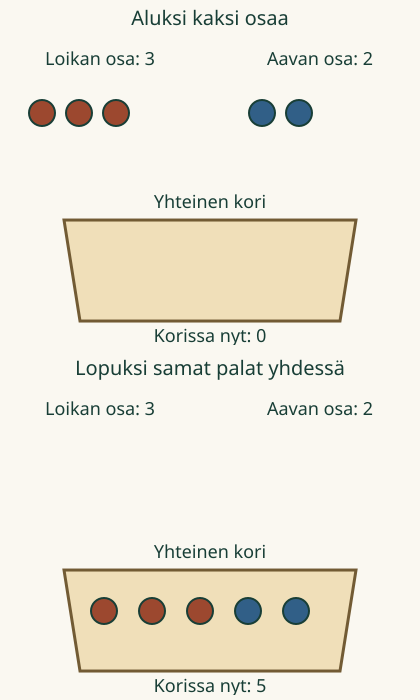

Loikka ja Aava kokoavat yhteiset eväät. Loikalla on 3 palaa ja Aavalla 2. Montako palaa tulee samaan koriin?
Kaksi osaa, yksi yhteinen määrä
Yhdistän kaksi määrää ja kerron, paljonko niitä on yhteensä.
Kuvan pyörylät ovat eväspaloja. Jokainen pyörylä on yksi pala. Palan nimeä tai väriä ei tarvitse osata sanoa.
Yhdistä molemmat osat
Ilman liikkuvaa kuvaa: tee paperille tai pöydälle 3 ja 2 palan ryhmät. Siirrä palat yhteen. Laske yhteinen määrä tai kerro se suoraan, jos tiedät.
Malli: samat palat yhdessä
Koriin tulee ensin 3 ja sitten vielä 2: yhteensä 5. Voit laskea kaikki palat. Voit myös pitää luvun 3 mielessä ja jatkaa: 4, 5. Saat vastata suoraan, jos tiedät.

2. Sama määrä voi olla kummassakin osassa
Kaksi Loikan palaa ja kaksi Aavan palaa ovat eri paloja. Niitä on yhteensä 4. Sama luku 2 tarvitaan kahdesti, koska osia on kaksi. Alla oleva malli alkaa valinnasta ”2 ja 2”.
Tutki mallia: 2 ja 2
Malli on ilman JavaScriptiä alkuperäisessä kohdassaan: avaa mallin kohta.
Ennusta: muuttuuko yhteinen määrä, jos Aavan palat tulevat koriin ensin?
Katso ajatus
Ei. Mukana ovat samat palat. 3 ja 2 on 5. Myös 2 ja 3 on 5. Eri järjestys ei tee uusia paloja eikä poista vanhoja.
Yhdistäminen ja laskun merkit
Kirjoitamme yhdistämisen 3 + 2 = 5. Plus + yhdistää osat. Merkki = kertoo saman määrän: osat yhdessä ovat yhtä paljon kuin koko määrä. Myös 2 + 3 = 5 kuvaa näitä osia.
Voit kokeilla myös laskun täydentämistä. Se on vapaaehtoista.
Uusi tilanne: samaan pöytään
Laita pöydälle 1 palikka ja sen viereen 4 palikkaa. Työnnä ne yhteen. Esine ja paikka vaihtuivat, mutta ajatus pysyy: molemmat osat lasketaan mukaan. Yhteensä on 5 palikkaa.
Apua
Pidä osat ensin erillään. Osoita Loikan osa ja Aavan osa. Laske jokainen pala vain kerran. Harjoituksen laskemisapu antaa vapaaehtoisia merkkejä. Merkit eivät muuta määrää eikä niiden tekeminen ole tarkistuksen ehto. Aikuinen voi lukea ohjeet.
Lisäpohdinta: vielä yksi osa
Loikalla on 2 palaa ja Aavalla 3. Löytyy vielä 1 pala. Ensin 2 ja 3 on 5, sitten vielä 1 tekee 6. Voit tutkia kolmen osan esitystä tässä. Tämä on jatkopohdintaa, ei ehto kahden osan harjoitukselle.
Tutki kolmen osan mallia
Malli on ilman JavaScriptiä alkuperäisessä kohdassaan: avaa mallin kohta.
Opettajalle ja ilman ruutua
Vuosiluokat 1–2, atominen tavoite M-ADD-01. Vaadittu esitieto M-NUM-02 säilyy: viimeinen oikein laskettu lukusana kertoo joukon määrän. Yksi yhteen -laskentaa saa tukea; kohteiden nimeämistä, ääneen vastaamista tai kosketusten sarjaa ei vaadita. Mallissa osat ovat erillisiä, eikä sama esine kuulu kahteen osaan.
Lukumäärät ovat pieniä, summa enintään 10. Yhdistäminen säilyttää kaikki esineet. Värit muistuttavat osien alkuperästä, mutta väriä ei tarvitse nimetä: jokainen pyörylä on yksi pala. Vaihtoehtoiset laskutavat ja osien järjestykset ovat sallittuja. Kolmen osan esitys on erillinen lisäpohdinta Lite-siirron tapaan.
Harjoitus tarkistaa annetun tilanteen yhteisen määrän. Valinnainen lasku täydennetään valmiiseen +/=-rakenteeseen; se ei osoita vapaata lausekkeen kirjoittamista. Esitys ja apumerkit ovat näkyvää opetustukea. Ei pisteitä, henkilöhistoriaa tai päätelmää itsenäisestä, pysyvästä hallinnasta. Ihmisen tai lapsen arviota ei ole tehty.
Ilman ruutua käytä kahta erillistä kasaa mitä tahansa pieniä turvallisia esineitä. Siirtäkää ne samaan paikkaan, mutta älkää lisätkö tai poistako mitään. Lapsi saa vastata numerolla, osoittamalla tai omin sanoin. Kokeilkaa myös yhtä suuria osia ja toista yhdistämisjärjestystä.
Lopuksi: miksi pelkkä Loikan määrä ei vielä kerro koko korin määrää?

 Loikka ja Aava kokoavat yhteiset eväät. Loikalla on 3 palaa ja Aavalla 2. Montako palaa tulee samaan koriin?
Loikka ja Aava kokoavat yhteiset eväät. Loikalla on 3 palaa ja Aavalla 2. Montako palaa tulee samaan koriin?